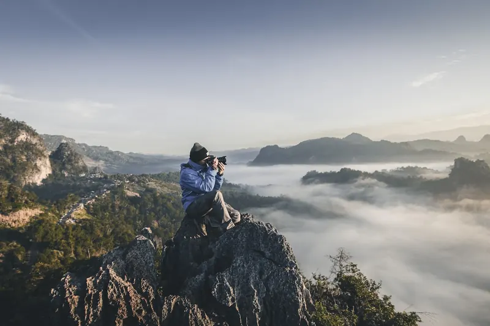
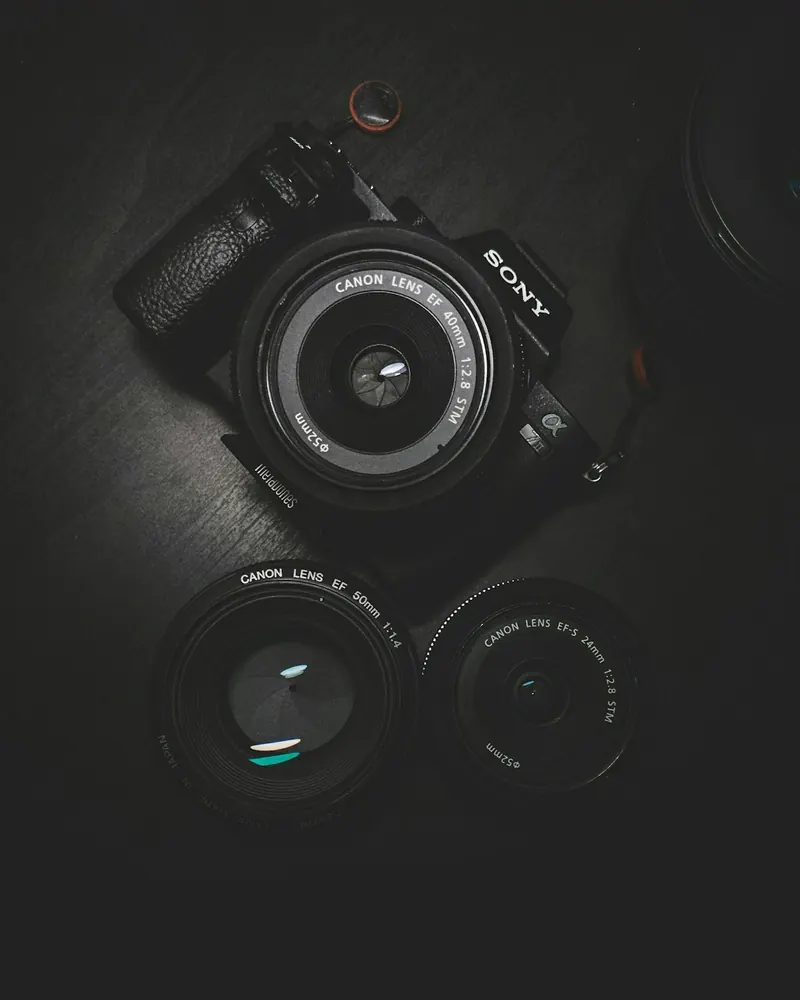
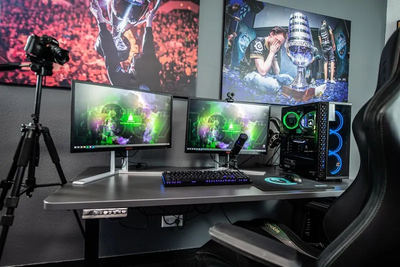
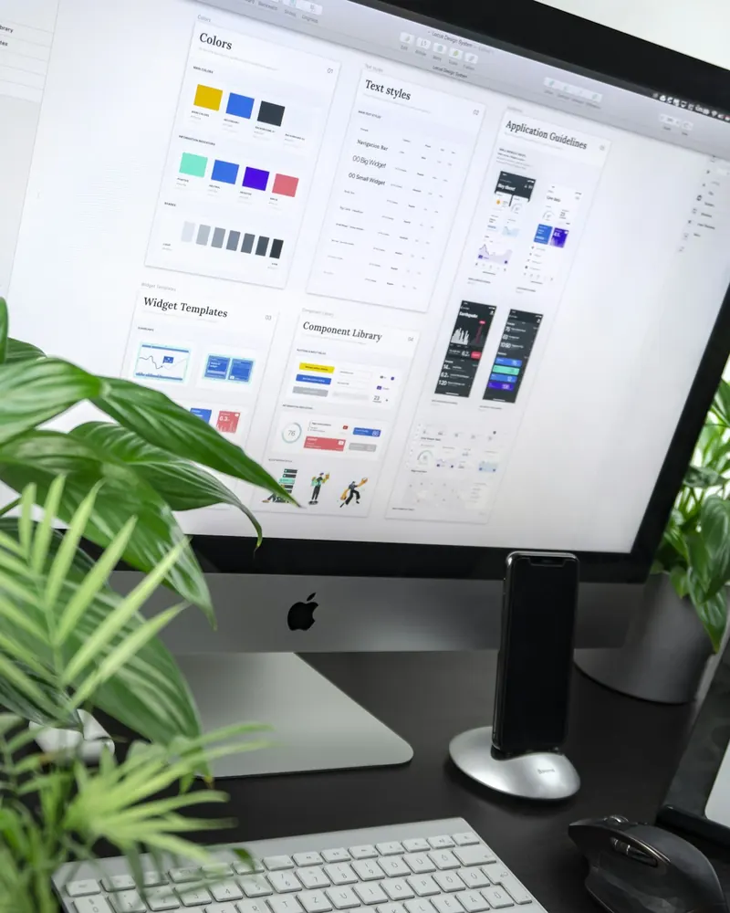
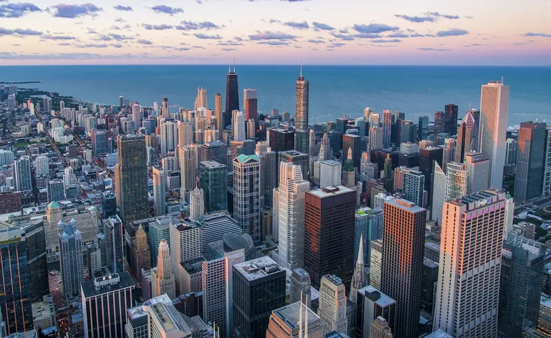
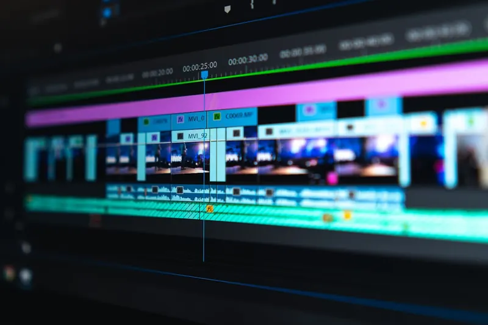

التوافق
نحدد الهدف والجمهور والرسائل الرئيسية والمعنيين والقنوات والموعد النهائي وجهة الاعتماد.
إنتاج الأفلام والمحتوى للجهات الحكومية والمؤسسات في دولة الإمارات
من المناسبات الوطنية والفعاليات الرسمية إلى الحملات العامة والأفلام المؤسسية، تقدّم SMV إنتاجاً متكاملاً يجمع بين الحسّ الإبداعي، وفهم البروتوكول، ودقّة التنفيذ التي تتطلّبها الاتصالات الرسمية.
تغطية في جميع أنحاء الدولة · إنتاج سريع التسليم · جاهز للبث
مجموعة من الأفلام والفعاليات الرسمية والمحتوى سريع الإنجاز، أنتجناها لجهات تسهم في صياغة الحياة العامة والاقتصاد والقصة الثقافية في دولة الإمارات.


مسار إنتاج شفاف يمنح فرق الاتصال والبروتوكول والفعاليات والمشتريات رؤية واضحة في كل مرحلة.
نحدد الهدف والجمهور والرسائل الرئيسية والمعنيين والقنوات والموعد النهائي وجهة الاعتماد.
نطور الفكرة والمعالجة والنصوص والجدول وخطة التصوير والطاقم والمعدات والمواقع والتصاريح وضوابط المخاطر.
قائد إنتاج مخصص ينسق بين الطاقم وممثلي الجهة وفرق الموقع والأولويات المباشرة طوال المهمة.
تُتفق جولات الملاحظات وأصحاب القرار وتسمية النسخ مسبقاً لإبقاء الاعتمادات واضحة وحماية الموعد.
تُنظم المواد النهائية حسب القناة واللغة والصيغة والاستخدام، مع تسليم واضح لفرق الاتصال والأرشيف.
أفلام استراتيجية تحوّل السياسات والمبادرات والخدمات والإنجازات إلى قصص إنسانية واضحة للجمهور والمعنيين.

التسليمات المعتادةالفيلم الرئيسي · أفلام الحملات · أفلام توضيحية01تغطية مخططة للمؤتمرات والمعارض والمنتديات والاحتفالات واللقاءات رفيعة المستوى، بأولويات تصوير متوافقة مع البرنامج وخطة الاتصال.
سرد بصري يحترم السياق الثقافي للأعياد الوطنية والمناسبات التذكارية والمحطات العامة والمبادرات المجتمعية.

التسليمات المعتادةأفلام تذكارية · مواد الحملات · مقابلات03تغطية رصينة تُبنى حول البروتوكول الرسمي وضوابط الوصول وأولويات فرق الاتصال والإعلام.

التسليمات المعتادةتغطية الوصول والجولات · الاجتماعات · التوقيعات04إنتاج متعدد الكاميرات موثوق للجمهور المباشر والقنوات الرسمية وشركاء الإعلام والفعاليات الهجينة.

التسليمات المعتادةالإخراج المباشر · أنظمة الكاميرات · الرسوم05حلول تصوير جوي مرخّصة وأنظمة كاميرات متخصصة للأماكن والبنية التحتية والوجهات والفعاليات الكبرى، وفق متطلبات الموقع والتصاريح.

التسليمات المعتادةدرون · تصوير زمني · أنظمة مستقرة06فريق التقاط وتحرير ميداني للمكاتب الإعلامية وفرق التواصل التي تحتاج مواد معتمدة في اللحظة المناسبة.
مونتاج وتلوين وصوت ورسوم متحركة وترجمات ونسخ متعددة الصيغ، مصممة لمراجعة منضبطة وإطلاق متسق.

التسليمات المعتادةمونتاج · تصحيح ألوان · مكساج صوتي08تُتاح وثائق التسجيل والرخص والتأمين والامتثال لفرق المشتريات المخوّلة عند الطلب.
اطلب ملف الشركة وأوراق الاعتماد →شاركونا الغرض والجمهور والموقع والتواريخ والمخرجات المطلوبة. ويمكن أن تبدأ المهام الحساسة أو المبكرة بمحادثة سرية لتحديد النطاق.